Kaldevo · services B2B à prix fixes
Sept services B2B fondés sur les sources officielles, pas sur des suppositions.
Chaque service a son offre, ses prix publiés et un exemple complet à télécharger. Une personne relit chaque livrable ; les faits, montants et fichiers sont contrôlés par des scripts, pas par l’IA.
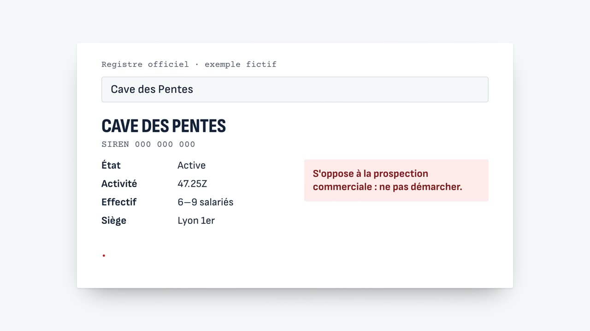
Sachez qui contacter, et pourquoi — preuve à l’appui.
Recherche commerciale qualifiée
Pilotedès 290 USD
Essayer l’outil gratuit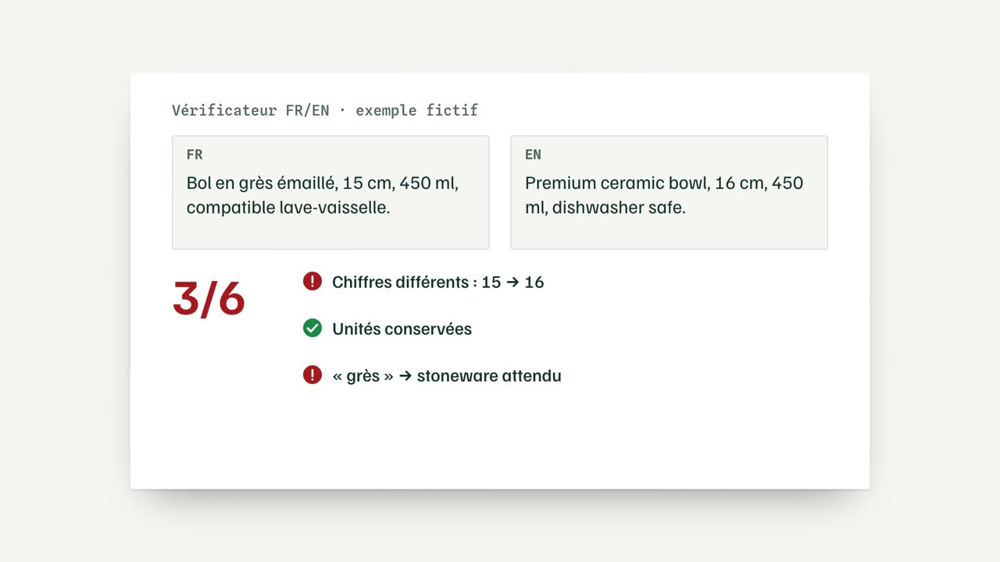
Un catalogue bilingue fidèle à vos produits.
Catalogues e-commerce FR/EN
Pilotedès 180 USD
Essayer l’outil gratuit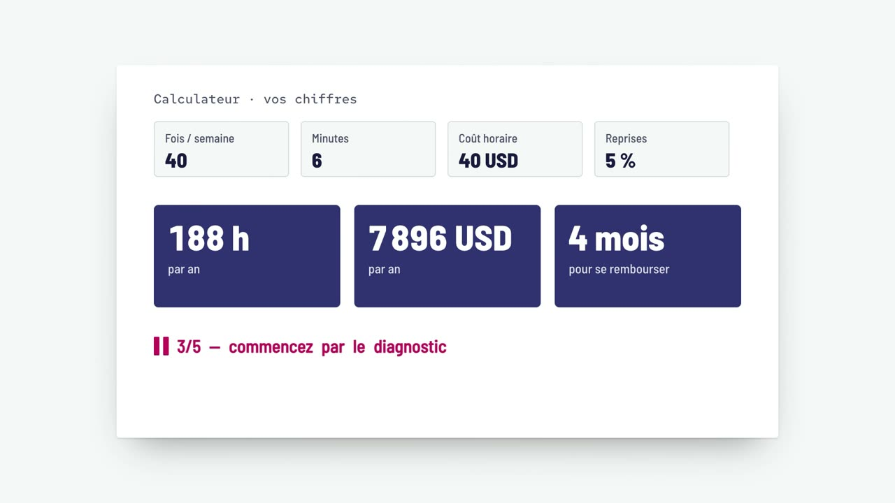
Une automatisation que vous pouvez suivre, arrêter et reprendre.
Automatisations administratives fiables
Diagnostic + prototypedès 350 USD
Essayer l’outil gratuit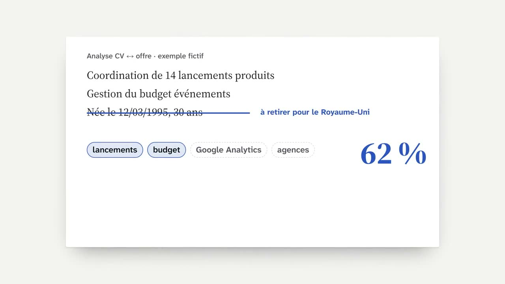
Une candidature fidèle à votre parcours, que vous pouvez défendre.
Dossiers de candidature FR/EN
Dossierdès 340 USD
Essayer l’outil gratuit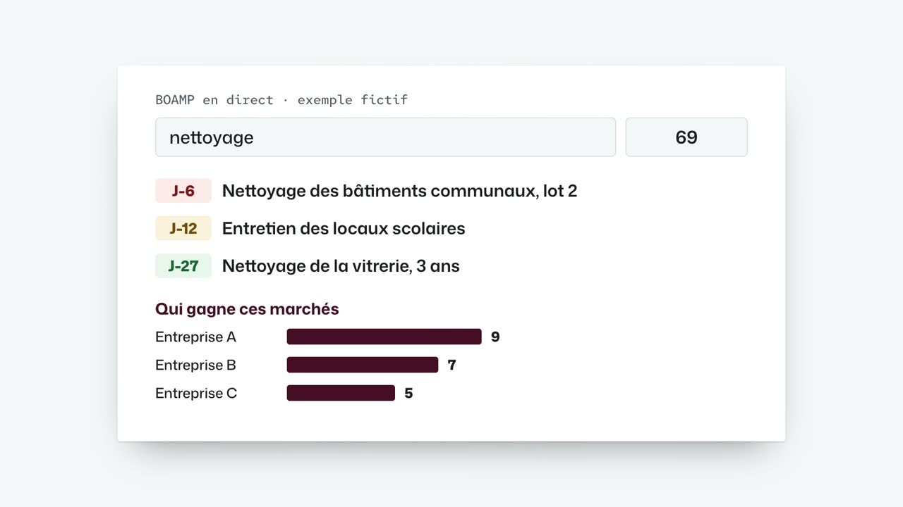

Les marchés publics faits pour vous, avant la date limite.
Marchés publics : veille et réponse
Veille 30 joursdès 190 USD
Essayer l’outil gratuit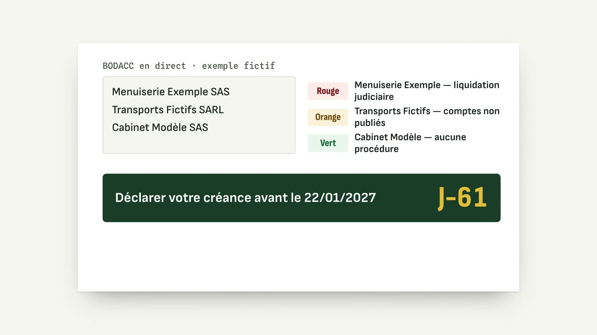
Sachez quel client va mal avant qu’il ne vous paie plus.
Risque client et créances
Audit risque clientsdès 190 USD
Essayer l’outil gratuit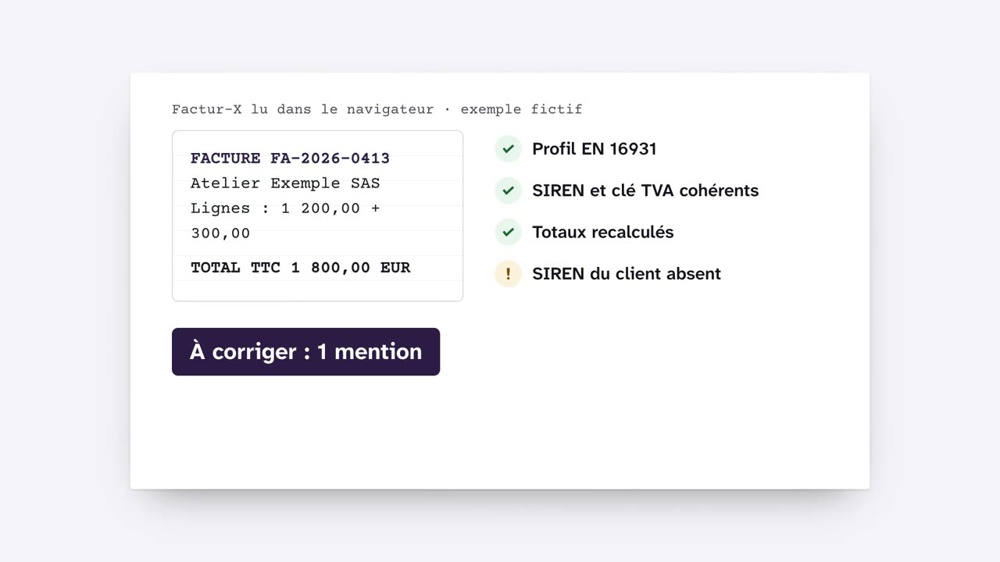
Vos factures prêtes pour la facturation électronique obligatoire.
Facturation électronique : mise en conformité
Audit de 20 facturesdès 190 USD
Essayer l’outil gratuit
10 secondes
Quel service pour votre besoin ?
La règle de la maison
- Un exemple complet, ouvrable et téléchargeable, pour chaque service.
- Des prix publiés et des limites écrites avant toute commande.
- Les faits, nombres et fichiers contrôlés par des scripts déterministes.
- Une personne relit chaque livrable avant remise ; 14 jours de retours.
IA et relecture humaine
Des modèles d’IA servent à préparer des brouillons. Chaque élément livré est vérifié par une personne, et les contrôles de faits, de montants et de fichiers sont faits par des scripts déterministes — pas par l’IA. Les données de votre dossier ne sont pas envoyées à un service d’IA tiers.
Fenêtre de retours de 14 jours après remise. Accusé de réception sous 2 jours ouvrés (UTC). Une erreur de notre part est corrigée sans frais ; un changement de cible ou une nouvelle demande fait l’objet d’un devis.
Guides pratiques
- Comment choisir un prestataire B2B fiableLes critères pour choisir un prestataire B2B : exemples concrets, prix publiés, limites écrites, méthode de contrôle, conditions de correction et de remboursement.
- Prestation au prix fixe ou en régie : que choisirPrix fixe ou facturation au temps passé (régie) : avantages, risques et cas d’usage de chaque modèle pour une petite entreprise qui achète une prestation.
- IA et relecture humaine : pourquoi les deuxCe que l’IA générative fait bien dans une prestation, ce qu’elle fait mal, et pourquoi une relecture humaine et des contrôles automatiques restent nécessaires.
- Rédiger un bon brief pour un prestataireLes rubriques d’un brief clair pour une prestation : objectif, contexte, livrable attendu, contraintes, exemples, critères de réussite et calendrier.
- Comment vérifier un livrable avant de l’accepterMéthode pour vérifier un livrable de prestation avant de l’accepter : relire contre le brief, contrôler un échantillon, vérifier les sources et signaler les écarts.
- Quelles tâches une PME peut-elle externaliser ?Recherche commerciale, traduction, automatisation, rédaction : quelles tâches une petite entreprise peut externaliser utilement, et lesquelles garder en interne.
Questions fréquentes
Qu’est-ce que Kaldevo ?
Un studio qui vend sept services B2B à prix fixes : Ciblari (recherche commerciale sourcée), Duofiche (catalogues e-commerce français-anglais), Rouagia (automatisations administratives), Candiluma (CV et candidatures bilingues), Achaleo (marchés publics), Creanzo (risque client et créances) et Docelyn (facturation électronique). Chaque service a sa page, ses prix et un exemple complet ou un outil gratuit.
Comment sont fixés les prix ?
Ils sont publiés en dollars américains sur chaque page de service. Les formules à prix fixe reçoivent un devis automatique au prix affiché ; les autres sont chiffrées après lecture du brief. Le paiement par carte (Stripe) n’intervient qu’après acceptation du devis.
L’IA fait-elle le travail ?
Des modèles d’IA préparent des brouillons, mais rien n’est livré sans relecture humaine. Les faits, les nombres et les fichiers sont contrôlés par des scripts déterministes : un chiffre absent des données du client est refusé.
Où sont traitées mes données ?
La base de données et les fichiers sont hébergés par Supabase dans la région de Paris. Les brouillons sont préparés sur des machines Kaggle dans un espace privé, effacé à la fin de chaque session. Le détail figure dans la politique de confidentialité.
Que se passe-t-il si le résultat ne convient pas ?
Chaque livraison ouvre une fenêtre de retours de 14 jours. Si un brief sort du cadre d’une formule, nous vous écrivons avant tout travail et remboursons intégralement.